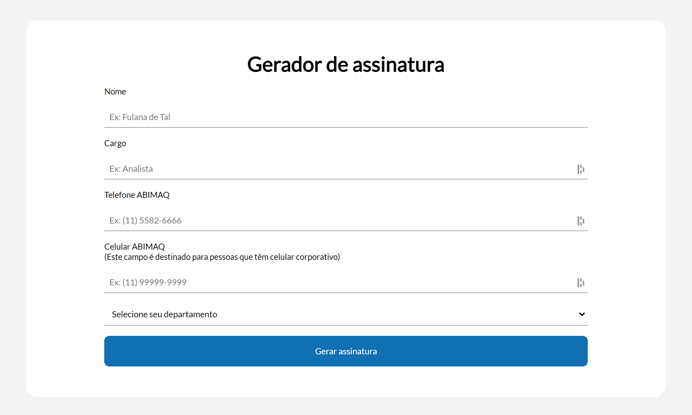
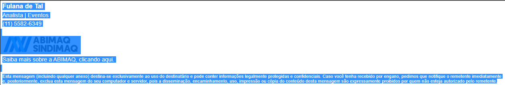
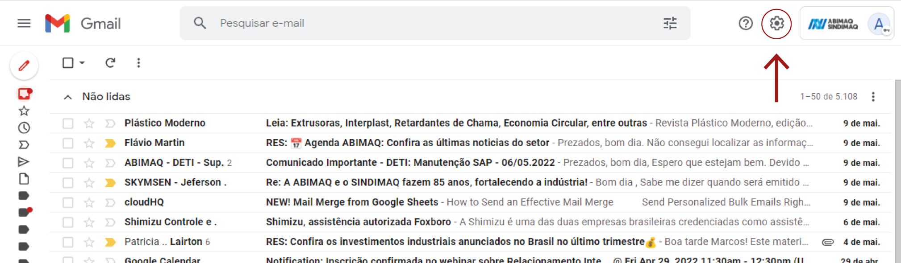
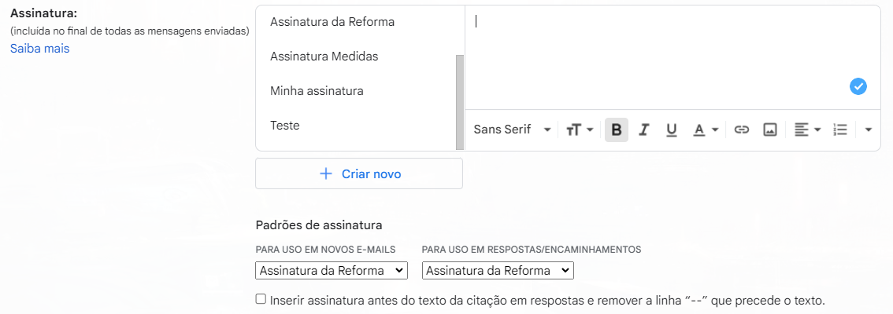
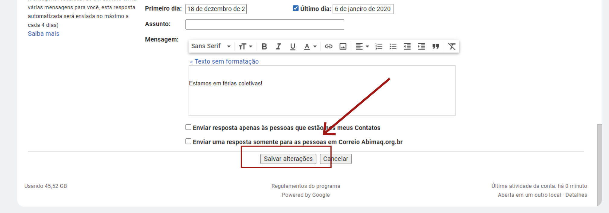

Tutorial para inserção de assinatura
1 - Preencher o formulário com suas informações, faça com calma e atente-se para digitar corretamente.
Acesse aqui: http://mkt.abimaq.org.br/assinatura
2 - Clique em GERAR ASSINATURA
3 - Selecionar todo o texto da assinatura e COPIE
Importante: Não se esqueça de selecionar o texto de adequação a LGPD
4- Abra seu gmail e vá em CONFIGURAÇÕES na parte superior direita da tela
5 - Na aba de assinatura, INSIRA o texto e que copiou
Importante: Ao colar, a imagem do logo ABIMAQ não aparecerá, porém, na hora de realizar o envio do e-mail, ela aparecerá normalmente
6 - SALVE as alterações feitas
ORIENTAÇÕES ADICIONAIS
Você poderá repetir o processo quantas vezes desejar, basta retornar a tela do formulário e gerar uma nova.
Orientamos que os gerentes de câmara façam uma para cada setor que atende e na assinatura do e-mail próprio selecionar DEMI, que ficará como “Mercado Interno”.
Caso haja dificuldades ou dúvidas, deverão ser realizados com a Fernanda Santos: (11) 5582-5761 da Equipe de Marketing.